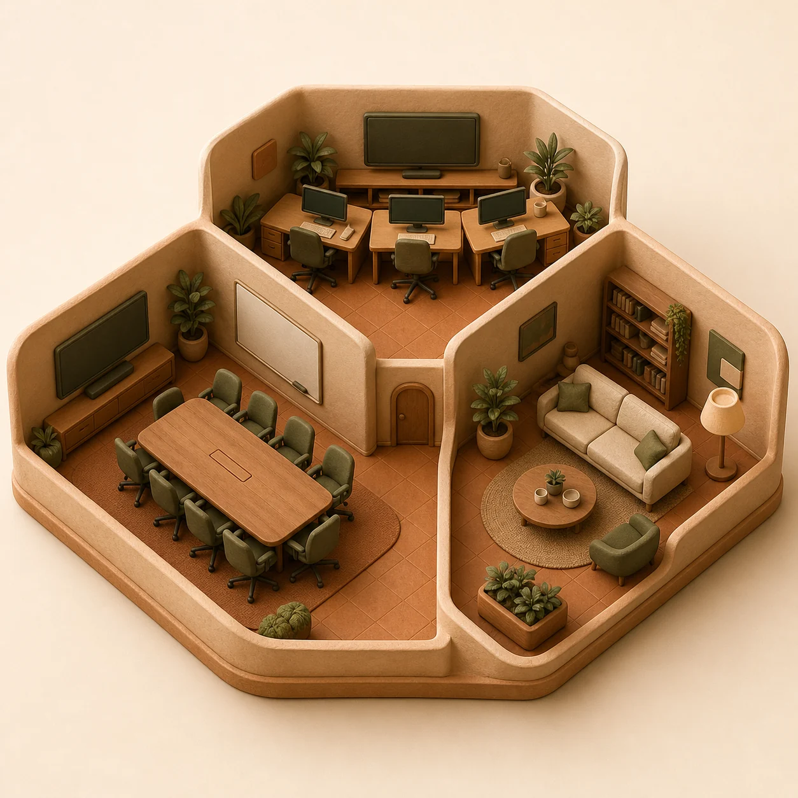

전체 요약
지금 돌고 있는 자동화 루틴 수
0개매일 루틴
0개주간·주기 루틴
0개월간·상시·예약
📓 공용 허브
매일 22:00 마감 루틴 → 다음 날 준비·가계부 기록이 한 번에 정리 · 미결 항목은 다음 날 아침에 다시 알려드려요
대회의실 · 지휘실 · 라운지, 세 공간에서 피클들이 움직입니다.

클레이 3D 오피스 · 이름표를 누르면 비서 상세, 공간 이름을 누르면 내 피클이 그 공간으로 이동합니다
안건을 정하고, 이야기하고, 결정사항을 남겨요.
아직 대화가 없어요
첫 메시지를 남겨보세요
각 피클에게 일을 나눠주고, 진행 상황을 한눈에 봐요.
위의 + 새 작업 지시로 첫 일을 나누거나, 오피스 맵에서 피클 이름표를 눌러 바로 맡겨보세요.
지금 방에 있는 피클과 최근 함께한 피클의 상태를 모아봤어요.
피클 비서들의 AI 사용 한도를 기록하고 팀과 나눠요.
팀 공용 메모장 · 남긴 메모는 모두에게 바로 보여요.
와플과 피클들이 자동으로 돌리는 루틴 리포트입니다.
지금 돌고 있는 자동화 루틴 수
매일 22:00 마감 루틴 → 다음 날 준비·가계부 기록이 한 번에 정리 · 미결 항목은 다음 날 아침에 다시 알려드려요
하루의 흐름 · 00:00부터 24:00까지
날짜가 정해진 루틴 · 예약 오픈과 운항